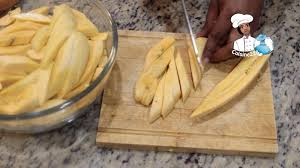
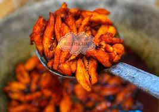
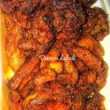

Nous contacter
Mes recettes
Accueil
YEM'S FOOD
POUR FAIRE L'ALLOCO HUILE ROUGE IL FAUT
1 :
des bananes
oignon(facultatif)
Sel.
Huile rouge.
2- COMMENT FAIRE l'ALLOCO HUILE ROUGE?
-epulcher les bananes
-les decouper en cube
; 
-mettre de l'huile rouge dans la poele le temps qu'elle chauffe;puis mettre la banane decoupee dans l'huile rouge

-attendre a ce que'elle cuisse puis l'enlever
